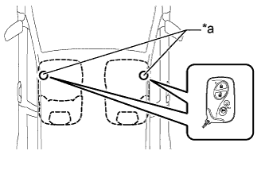
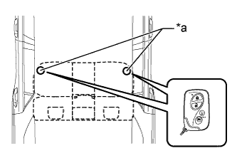
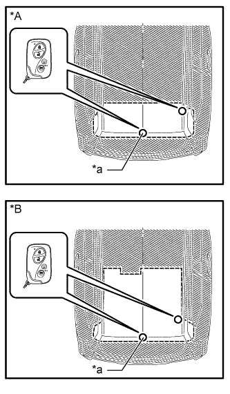
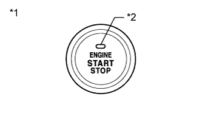

ENTRY AND START SYSTEM (for Start Function) > OPERATION CHECK |
| OPERATION DESCRIPTION |
Entry ignition function:
When the key is in the detection area inside the vehicle and the brake pedal is depressed, the engine is started by pressing the engine switch.
When the key is in the detection area inside the vehicle and the brake pedal is not depressed, the power source mode is changed by pressing the engine switch. The power source mode changes in the following order every time the engine switch is pressed: off → on (ACC) → on (IG) → off.
After getting into the vehicle while carrying the key when the engine switch is off, if the engine switch is pressed while not depressing the brake pedal, the power source mode changes to ACC and the engine switch indicator illuminates in orange.
After getting into the vehicle while carrying the key when the engine switch is off, if the brake pedal is depressed while the shift lever is in P or N, the engine switch indicator illuminates in green.
The engine starts if the engine switch is pressed when the engine switch indicator is illuminated in green.
Changing the power source mode when the key does not operate correctly due to wave interference or key battery depletion:
Unlock the door using the built-in mechanical key and get into the vehicle while carrying the key.
While depressing the brake pedal, hold the ornament side of the key against the engine switch.
When a "buzzer" sound is heard from the buzzer in the combination meter, release the brake pedal within 10 seconds. By pressing the engine switch while not depressing the brake pedal, the power source mode changes in the following order every time the engine switch is pressed: off → on (ACC) → on (IG) → off.
Starting the engine when the key does not operate correctly due to wave interference or key battery depletion:
Unlock the door using the built-in mechanical key and get into the vehicle while carrying the key.
While depressing the brake pedal with the shift lever in P or N, hold the ornament side of the key against the engine switch.
When a "buzzer" sound is heard from the buzzer in the combination meter and the engine switch indicator illuminates in green, press the engine switch within 10 seconds while keeping the brake pedal depressed to start the engine.
| CHECK ENTRY IGNITION FUNCTION |
Check the entry ignition function:
Get into the vehicle while carrying the key with the engine switch off. With the shift lever in P, check that the engine switch indicator illuminates in green when the brake pedal is depressed. Then check that the engine starts when the engine switch is pressed after the engine switch indicator illuminates in green.
While the brake pedal is released and the key is being carried, check that the power source mode changes in the following order when the engine switch is pressed: off → on (ACC) → on (IG) → off.
With the shift lever in P, check that the steering lock operates when a door is opened.
|  |
Check the entry ignition operation range for the front side. Place the key in either of the two locations making sure that the key is oriented as shown in the illustration, and then check that the engine can be started.
| *a | Inspection Point |
|  |
Check the entry ignition operation range for the rear side. Place the key in either of the two locations making sure that the key is oriented as shown in the illustration, and then check that the engine can be started.
| *a | Inspection Point |
|  |
Check the entry ignition operation range for the luggage compartment. Place the key in either of the two locations making sure that the key is oriented as shown in the illustration, and then check that the engine can be started.
| *A | w/ Rear No. 2 Seat Assembly |
| *B | w/o Rear No. 2 Seat Assembly |
| *a | Inspection Point |
| CHECK POWER SOURCE MODE CHANGING FUNCTION |
Check the engine switch.
Check that the power source mode changes according to the chart below.
| Shift Position | Brake Pedal | Power Source Mode when Engine Switch Pressed |
| P | Released | Off → on (ACC) → on (IG) → off |
| P | Released | Engine running → off |
| P | Released | On (ACC)* → off |
| P | Depressed | Off → engine starts |
| P | Depressed | On (ACC) → engine starts |
| P | Depressed | On (IG) → engine starts |
| P | Depressed | Engine running → off |
| P | Depressed | On (ACC)* → off |
| N | Released | Off → on (ACC) → on (IG) (after power source mode changes to on [IG], power source mode changes between on [IG] and on [ACC] every time engine switch is pressed) |
| N | Released | Engine running → on (ACC) |
| N | Depressed | Off → engine starts |
| N | Depressed | On (ACC) → engine starts |
| N | Depressed | On (IG) → engine starts |
| N | Depressed | Engine running → on (ACC) |
| Not P or N | Released | Off → on (ACC) → on (IG) (after power source mode changes to on [IG], power source mode changes between on [IG] and on [ACC] every time engine switch is pressed) |
| Not P or N | Released | Engine running → on (ACC) |
| Not P or N | Depressed | Off → on (IG) |
| Not P or N | Depressed | On (ACC) → on (IG) |
| Not P or N | Depressed | Engine running → on (ACC) |
| CHECK POWER SOURCE MODE INDICATION |
|  |
| *1 | Engine Switch |
| *2 | Indicator Light |
Check the engine switch indicator.
| Engine Switch | Indicator |
| Off (Excludes condition in which engine can be started) | Off |
| On (ACC) (Excludes condition in which engine can be started) | Illuminated in orange |
| On (IG) (Excludes condition in which engine can be started) | Illuminated in orange |
| Condition in which engine can be started* | Illuminated in green |
| Engine started | Off |
| The engine can be started by pressing the engine switch when either of the following conditions is met. | |
| Condition 1 | All conditions are met:
|
| Condition 2 | All conditions are met:
|
Indicator Condition Chart
| Indicator | Vehicle State |
| Off | Either condition is met:
|
| Illuminated in green | All conditions below are met and the vehicle is in a state in which the engine can be started if the engine switch is pressed: The key is inside the vehicle, the stop light switch is on and the shift lever is in P or N. |
| Illuminated in orange | The engine switch is on (ACC) or on (IG), and the vehicle is in a state in which the engine does not start if the engine switch is pressed. |
| Blinking in green (1 second intervals) | When the power is being turned on or the engine is being started, the steering fails to unlock (steering lock is stuck). The indicator starts blinking when the steering fails to unlock. The indicator stops blinking when 30 seconds elapse after blinking starts, or when the power is being turned on or the engine is being started again. |
| Blinking in orange (2 second intervals) | The steering lock ECU or the power management control ECU has an internal malfunction. The indicator starts blinking when the steering lock ECU or power management control ECU is determined to have an internal malfunction. The indicator stops blinking when the ECU returns to normal or 15 seconds elapse after blinking starts. |